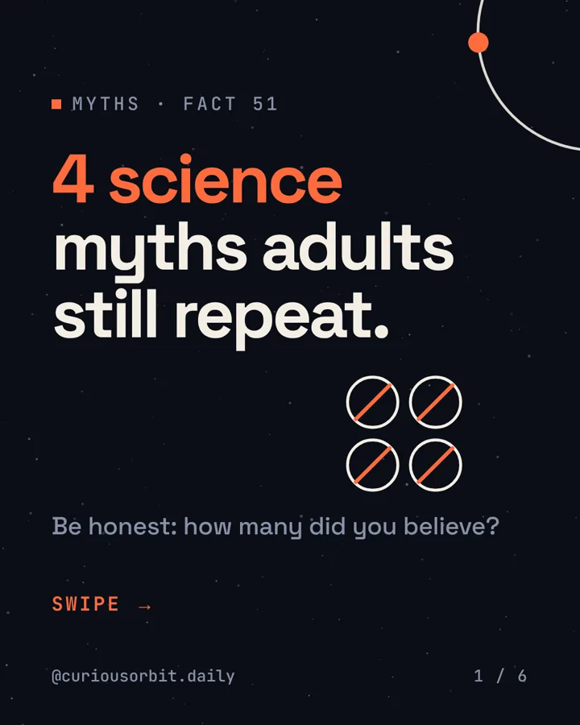
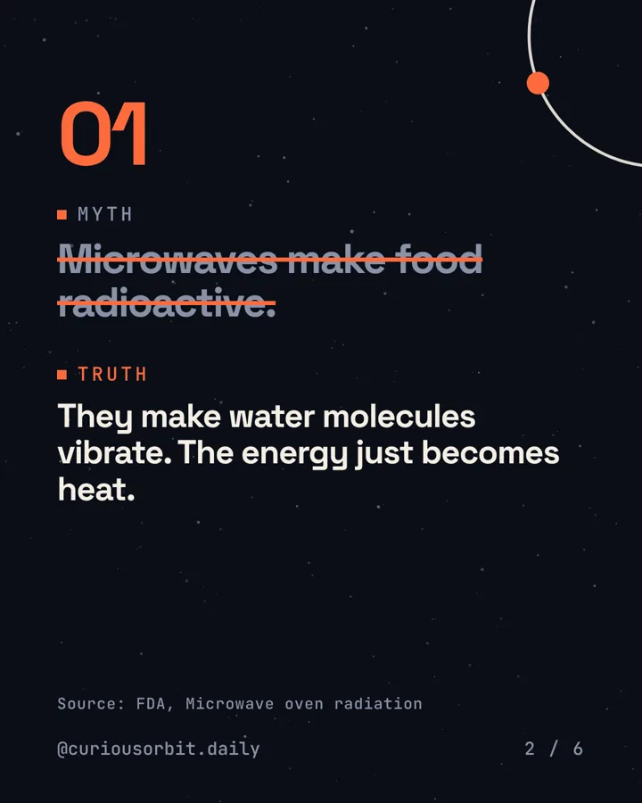
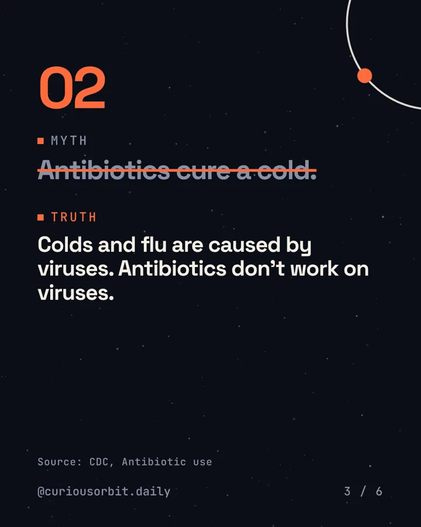
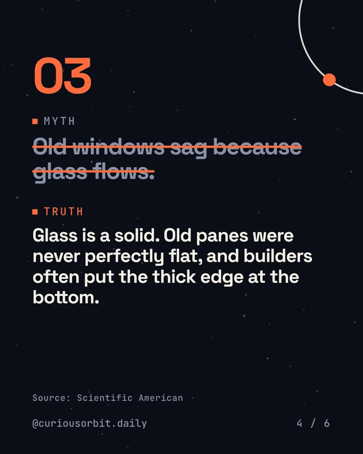
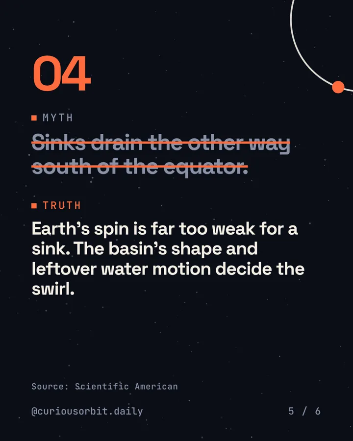
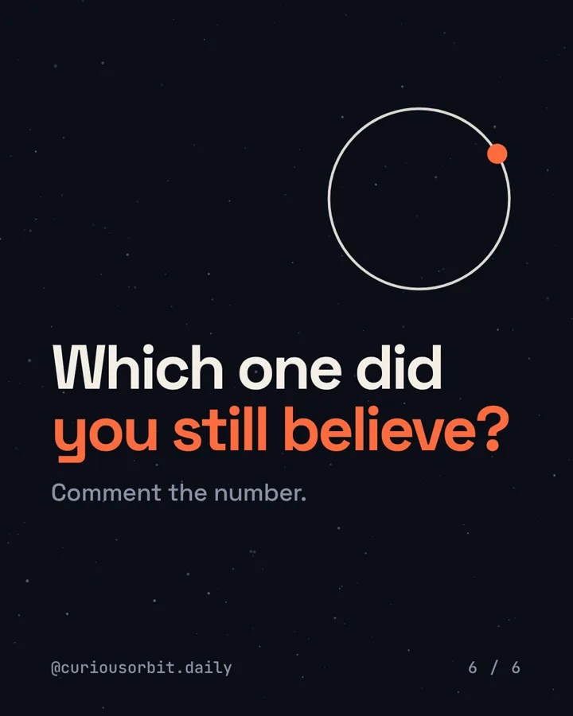

Myths · Fact 51 · carousel
4 science myths adults still repeat.
Four things grown-ups say with total confidence.
Which one did you still believe? Comment the number.
Save this for the family group chat. Follow @curiousorbit.daily for more.
Fact 51 · carousel
This fact drops Fri 23 Oct, 1 pm.
No spoilers. Get it in your inbox the morning after, or follow along on Instagram.